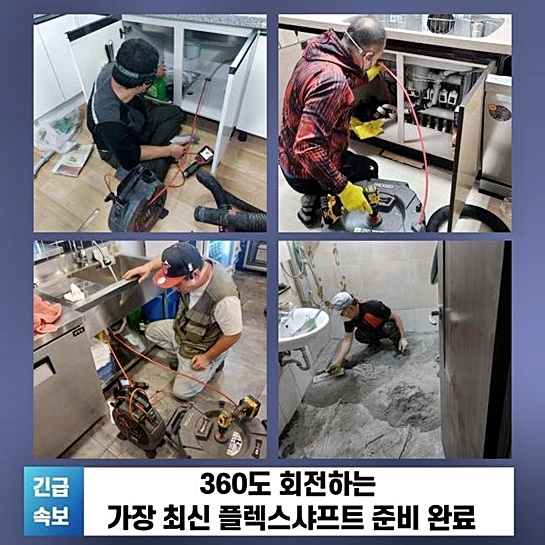
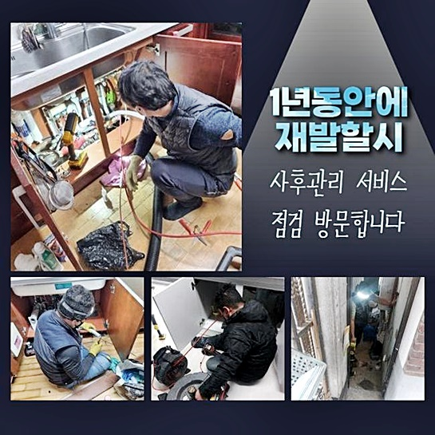
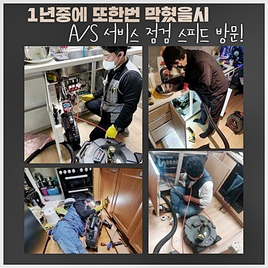
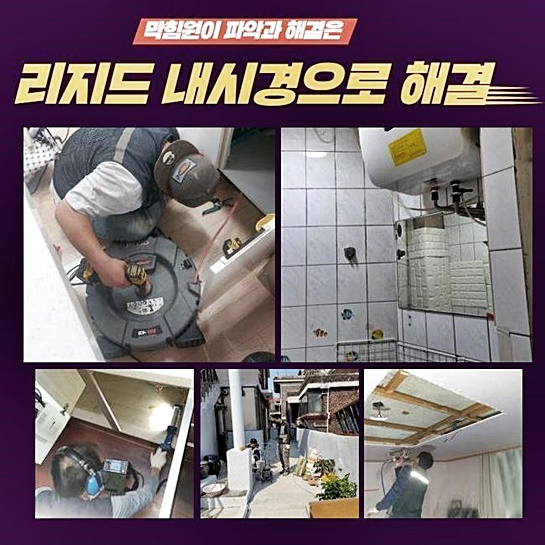
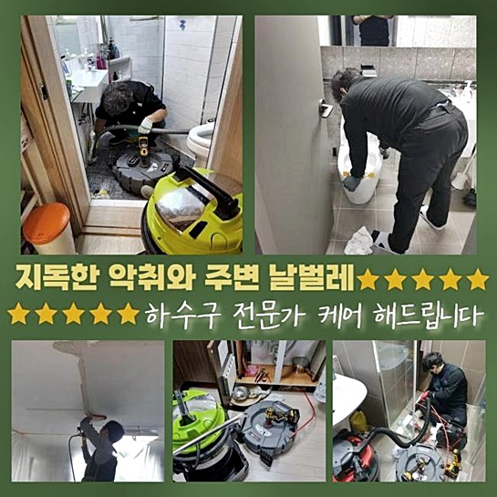
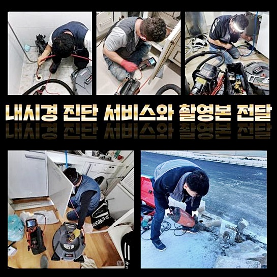

🏠 성북구 정릉동씽크대배수관막힘 안암동 횡주관청소 배관설비공사
용인시 처인구 배관막힘 전문 시공 후기

📋 작업 개요
- 위치: 용인시 처인구, 수원시 영통구, 화성시 동탄
- 서비스 유형: 배관막힘
- 작업 일시:
- 업체명: 하수구수사대 (010-5615-2118)
🔍 문제 상황
성북구 정릉동씽크대배수관막힘 안암동 횡주관청소 배관설비공사
하수구에서 나타나는 고장 문제는 수돗물이 배출되어가는 스피드가 줄어든다거나 불순물이 역방향으로 밀려오는 증상이 자주 목격되곤 합니다
이런 현상들은 하수구 안에 이물질이 대량으로 존재함을 말하며 이를 방치한다면 잔뜩 막혀버리는 일이 생겨요
며칠 전에 수습해 드렸던 고장난 하수구로 연락주신 케이스도 고객님께서 평상시랑 다른 점을 느끼시고 전화 주신 사항이었습니다
여러 수단으로 현황 검토를 하고 최상의 효과를 내주는 솔루션을 접목하여 부실한 점을 보완했습니다
처리가 힘들게 보이는 하수구 이슈를 고치기 위한 첫 단계로써 하수구 안팎을 살핀 다음에 가득 적체된 이물질을 타겟을 파악하여 없애버렸습니다
물길을 말끔하게 정화하고 다시 한번 기기를 넣어서 배수로 곳곳을 스캔해서 혹시나 놓친 점이 머물러있진 않은지 재검토합니다
하수구가 갑자기 마비되는 것은 아파트나 단독주택 등 다수의 건물에서 피어오를 수 있는 일입니다
하수구 이슈는 지식과 기술력을 겸비해야만 부실함이 느껴지지 않는 수준으로 개선을 할 수 있으며 고장의 반복을 막게 됩니다
단번에 해결안을 보고 싶다면 스스로 수습해보는 게 아니라 전문가에게 얼른 연락을 취하여 의뢰하셔야 해요
문제가 발생한 영역에 진출해서 세부적으로 탐색을 해봤더니 바닥 위엔 솟구쳐 올라온 찌꺼기들이 올려져 있었고 구린내도 진동을 했습니다

🔎 원인 분석
💡 전문가 진단: 정밀 진단 장비를 사용하여 슬러지의 고착 여부를 판명하고 타격/세척 작업을 실시했습니다.
얼마나 막혔나 물 배출을 해보니 물이 세월아네월아 배출되는 현상을 눈앞에서 확인했고 잘 작동하다가 갑작스레 물이 거북이처럼 느릿해진거라 말씀하셨죠
물을 꽤 쓰고나면 물이 찰랑하게 고이고 더러운 노란 오물이 배관을 역류해서 튀어나왔다고 합니다
안에 완전 밀착된 노폐물은 물을 받아서 버리더라도 수월하게 뚫리지 않는 상황이 많은데 다년간 쌓이면 압축되어 고체화됩니다
위급한 상황이 생긴다면 설비 전문공의 힘을 빌려서 문제를 극복하는 게 독보적인 탈피구입니다
심지어 상가건물의 화장실이 차단되어버려 주변 상인들이 손을 씻는 단순한 일도 불가능한 상황이라서 건물을 오가는 다수의 인물들이 피해가 막심하다며 상황 설명을 해주셨네요
다수의 인원이 방문하는 건물 내의 트러블이면 더욱 위급한 사안으로 평가합니다
하수구가 겪는 에러는 수많은 동기가 쌓여서 형성될 수 있는 일이니 막힘의 사유를 잡는 것이 메인 업무라고 할 수 있습니다
문제 요소를 여러가지 탐색 기기를 활용해서 내외부를 샅샅이 뒤졌는데 바닥부 밑의 배수로에 부적합한 부분이 있음을 알게됐죠
이 근처의 영역이 마비됐단 걸 알았으니 고효율을 내는 장치를 투입해서 잘못된 에러를 수리했어요
전문가가 문제를 받게되면 착착 극복할 수 있는 것이 가능하므로 악취같은 상황에서부터 신속하게 탈출할 수 있습니다
배관 내에 모여있는 오염원 응집체가 장기화되면 부패되고 가득 농축된 냄새를 풍길 수 있습니다
땅 아래 숨겨진 하수도는 어둡기도 하고 굉장히 습기가 상당하기 때문에 부패 속도가 매우 빨라요

🔧 작업 과정
하수구 관련한 트러블들은 전문가의 정밀 진단을 통해서야 어려움을 덜 겪으면서 불쾌함이나 불편함같은 부정적 감정을 감소시킬 수 있습니다
전문가 없이도 자가시공을 하면 당분간은 물의 이동이 나아지는 양상이라도 금세 재막힘이 생길 것입니다
여러 뚫음작업을 무작정 한다면 전체적인 배관 데미지와 점차 마모될 수 있어요
현장을 꼼꼼히 따져보고 제일 효율적이라 손꼽히는 기기를 최종적으로 선별해서 작업에 착공하게 됩니다
유연한 몸체의 샤프트 장치는 말단에 부착된 노커가 돌아가면서 배관 벽에 붙은 말라붙은 침전물 덩어리를 미세한 조각으로 잘라냅니다
이를 통해 고형화된 기름과 곰팡이까지 싹 씻어주는 단계가 시행되었는데 윗부분부터 차례로 들어가면서 모든 찌꺼기가 소강상태에 이르게 됐네요
강도가 상당하다 싶은 슬러지가 자리한 영역은 스피드 업을 해줘서 박박 긁어 해체해줬습니다
이러한 꼼꼼한 시공을 필두로 완전무결하게 처리됐고 설비의 안정적인 작동이 나타나게 됐습니다
오염원의 속성이나 경직도에 따라서 들어가는 접근법을 적합하게 짜는 융통성이 필요합니다
특히 배수로에 관련한 검사 절차를 면밀히 수행한 덕분에 남아있는 잔여물이 없도록 이물을 말끔하게 클리닝했다는 점이 보람차다고 생각했습니다
깊은 내부에 고여있는 슬러지덩어리가 배관을 막고 있었음을 확인했기에 냄새까지도 완전히 잡을 수 있었습니다
한 섹션만 고친 이후에 대충 마감하는 경우에는 냄새도 제거되지 못하고 계속해서 물이 막히는 일이 도돌이표처럼 일어날테니 시공력이 보장되는 곳에 맡겨야 합니다
육안 판별만으로는 정확한 원인 규명이 힘들 수 있지만 저희들은 여러가지 경력을 지닌 전문가로 형성된 조직이라 차별성이 있습니다
고난이도라고 분류되는 상태라고 보이더라도 유연한 대처능력으로 해결책을 내드리기에 믿고 의뢰하셔도 좋겠죠!
장비 라인업을 모두 지니고 있는데다가 신중한 태도로 마무리에 다다를 때까지 시공을 끈기있게 끌고갑니다
작은 장애물을 간과하다가 수습하기 힘든 상태까지 확장된 다음에야 그제야 전화해주시는 고객님들이 많이 보입니다
금방 씻어내릴 수 있는 사안이더라도 장기화된다면 난이도가 상승해서 자원이나 시간 문제도 더욱 부담스러워지게 됩니다
증상 발견시 빨리 연락하시면 빠르게 사태가 회복되어 정상 작동이 되는 컨디션을 제공받을 수 있단 사실을 숙지하시면 좋겠습니다
크고 작은 상가에서 만들어지는 하수구에 대한 이슈는 장사를 못할 수도 있으니 위기 상황으로 분류해요


✅ 작업 완료
하수시스템의 형태나 연식에 따라서 가장 적절한 방식으로 진행을 하므로 안전까지도 제공받으시게 될 것입니다
어떤 문제가 발생했느냐에 따라서 맞춤형 솔루션을 제공하고 작업에 따른 불만을 확 줄이기 위하여 기다림없는 빠른 지원을 고객님께 해드립니다
하수도를 멀리에서 주시하는 행동으로는 하수관이 직면한 진짜 문제를 모조리 인식하긴 어려워요
이런 난관을 노하우와 도구의 성능이 활용돼야 수준높은 시공이 일어나는 것이겠죠
호출을 해주신다면 혼탁하지 않은 깨끗한 물이 시원하게 운반되는 하수구 통로로 되돌려드린다고 장담하겠습니다



⚠️ 하수구 배관 막힘 예방 및 관리 가이드
- ✅ 머리카락, 비닐, 물티슈 등 물에 분해되지 않는 이물질은 절대 흘려보내지 마세요.
- ✅ 기름기 많은 식기는 설거지 전 키친타올로 먼저 기름때를 닦아내세요.
- ✅ 주기적으로 배수구에 뜨거운 물을 가득 부어주어 유지방 고착을 방지하세요.
- ✅ 작업 후 1년 이내 재발 시 무상 A/S 보증 서비스를 제공합니다.
💡 핵심 정리
- 확실한 장비 작업(내시경 점검 및 샤프트 스케일링)으로 원인을 뿌리 뽑습니다.
- 작업 후 1년 이내에 동일한 부위 재발 시 100% 무상 A/S 서비스를 보장합니다.
- 서울 · 경기 · 인천 전 지역에 24시간 언제든 긴급 출동할 수 있도록 항시 대기 중입니다.
❓ 자주 묻는 질문 (FAQ)
🚨 용인시 처인구 배관막힘 문제로 고민이신가요?
정확한 원인 진단과 확실한 시공으로 재발 없는 해결을 약속드립니다.
24시간 긴급 출동 | 서울 · 경기 · 인천 전지역 | 1년 내 재발 시 무상 A/S